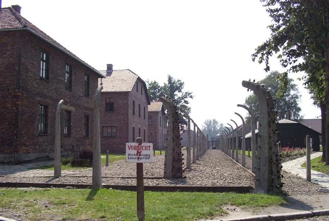

Only the original barbed wire is missing from most of the concrete posts at Auschwitz. They were electrically charged, four-meter-high barbed wire fences guarded by SS men armed with machine guns and rifles.
These sturdy brick buildings housed mainly Polish political prisoners and other slave laborers, who were tattooed a registration number on their left arms for identification purposes.

In the last photograph you will see a gray wall between two buildings (in front of a brick wall). This is the Death Wall, against which several thousand unruly or otherwise undesirable prisoners, resistance fighters and civilian hostages arrested in reprisals were shot, usually after being savagely tortured and/or held in solitary confinement in small basement cells in the building on the right (Block No. 11). Note that the windows of the building on the left are boarded up (at an angle, to permit some sunlight to come in), in order to prevent prisoners there from witnessing the executions.
Back to Auschwitz
Back to the Homepage